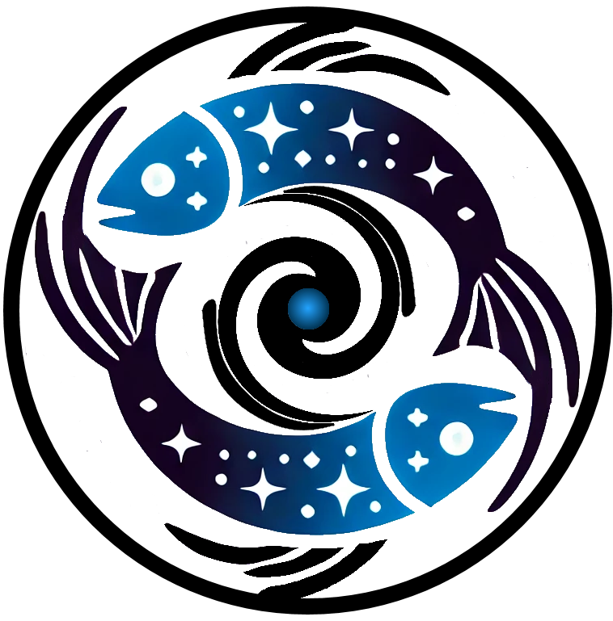

{kind=link}

Pisces User Guide#
Welcome to the Pisces User Guide! This page is the location of all technical documentation for the pisces library and is generally the first place to look when seeking information on how to use the library. In addition to the resources on this page, the API reference (API) gives in-depth information about call signatures and code structure. The developer guide (Pisces Developer Guide) is a resource for those who want to contribute to the library or understand the codebase in detail.
Topics in this guide are broken down by subject area, with each section providing a comprehensive overview of the relevant components and their usage.
Pisces Models#
The primary focus of Pisces is on providing a suite of analytic and semi-analytic models for astrophysical systems.
This ranges from models of galaxies and galaxy clusters to more complex systems like cosmological perturbation fields.
All of these models are housed in the models module and share a consistent structure for ease of use. This is the
most heavily used part of the library, and it is where most users will spend their time.
Overview#
To familiarize yourself with the basics of Pisces models, check out the following documents:
Overview
Model Types#
A variety of model types are available in Pisces, each designed for specific astrophysical applications. For each of these models, a considerable basis of scientific literature and methodology exists which may not be familiar to all users. As such, each group of models has a dedicated section of the user guide to describe what the model does and how it works. As more models are added to Pisces, these sections will be expanded to include new model types.
Building Blocks#
In addition to the actual models, Pisces provides a number of “building blocks” which are used to construct models. These are often generated by the user as inputs to the models, and they can also be used independently of the models themselves. These building blocks include profiles, scaling relations, random fields, etc.
Building Blocks
Configuration and Setup#
Pisces includes a flexible configuration system that allows users to customize model behavior, logging, file locations, numerical precision, and more. This system is driven by a YAML-based configuration file that is automatically loaded at runtime.
Configuration
Extensions and 3rd Party Libraries#
Pisces is designed to interoperate with the broader scientific Python ecosystem. Several extensions and optional integrations are supported, allowing users to plug Pisces into custom pipelines or expand its functionality with minimal effort.